Description
If lighting creates a mood and builds up the environment in the home, the choice of lamps to fit the bulb elevates and adds to the style of the home décor. Something is alluring in industrial style décor. It beautifully blends with any style of décor, be it modern, contemporary, rustic, or industrial, and still has its personality. Even a single piece will significantly impact and stand out in the décor. What’s more, it also comes with an opportunity to upcycle the vintage or industrial items available at home, showing your creativity in your home décor.
As a DIY upcycle enthusiast, I am sure you must have created a few upcycled lamps for seasonal décor or your DIY home décor. But have you ever considered converting an old, vintage faucet into a DIY faucet lamp? If not, I am here to tickle your creative imagination and inspire you to build a DIY industrial lamp using the faucet. This wall lamp DIY tutorial is an upcycled project that fits perfectly in any home décor style. The DIY recycled materials lamp will inspire your family and friends to think twice before throwing the faucet in the recycle bin.
Now, putting a pause on DIY lighting benefits with a DIY industrial lamp or upcycled lamp, let’s start with a simple tutorial on how to make an industrial lamp for your home décor. Whether switched on or off, this beautiful DIY faucet lamp will definitely be an attention grabber in your home.
Materials
Faucet
Wood plank
Bulb
Cable
Drill/silicon
Screws
Screwdriver
Step 1: Gather the materials
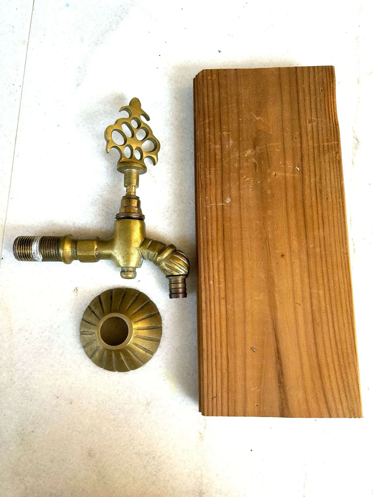It is advisable to start any DIY projects by gathering the materials. With materials in your workstation, you don’t have to run around for the materials. For making a DIY faucet lamp, you will need a faucet (you can get something like I am using from thrift market or vintage shops), a wood plank (to fit the faucet on it, and then to the wall), a bulb (you may opt for Edison lamp, it will enhance the beauty of your DIY industrial lamp using faucet), electrical cable, drill/silicon, and a few screws.
Step 2: Drill the wood to fit the faucet
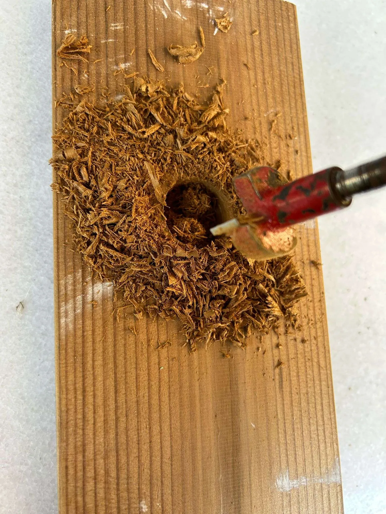Take the measurement of the faucet pipe that will be inserted through the hole drilled into the wood plank. Mark the measurement on the wood plank. Using a drill, make a hole in the wood plank to fit the faucet. Clean the wood plank of dust and sand the hole to smooth it with sandpaper.
Step 3: Check the hole drilled
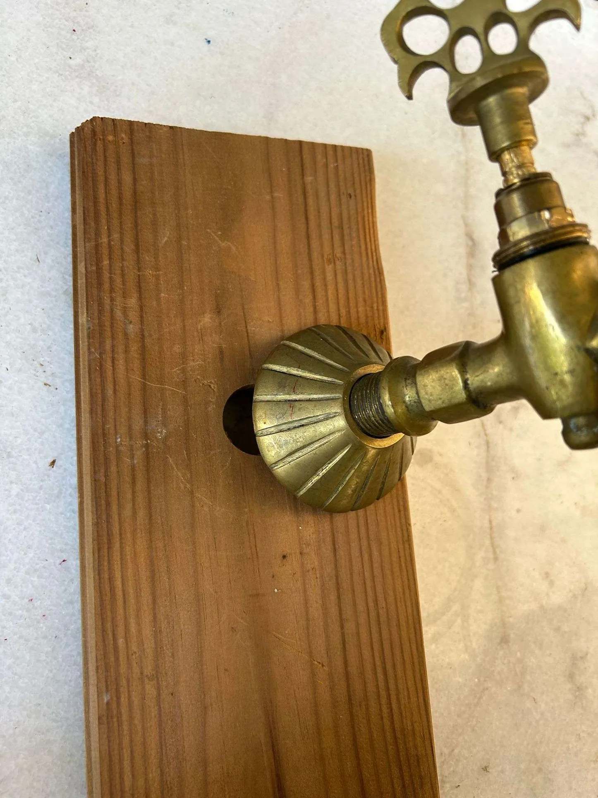Check the hole you drilled by inserting the faucet. The faucet should fit perfectly into the hole.
Bonus Tip: It’s crucial to take the correct measurement to drill the hole. If it is a small hole, the faucet pipe won’t pass through it. If it is a large hole, the faucet will not fit properly. The hole should be of exact measurement. However, you can use sealant to seal and fix the faucet pipe tightly with the hole if it is slightly larger than the faucet pipe.
Step 4: Fit the faucet in the wood plank
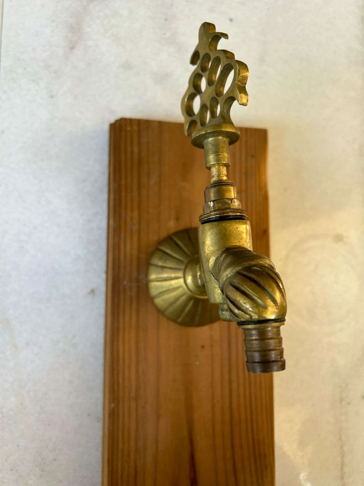Fit the faucet into the hole drilled in the wood plank. Refer to the image to see how you should fit the faucet into the hole of the wood plank.
Step 5: It's time to insert the electrical cable
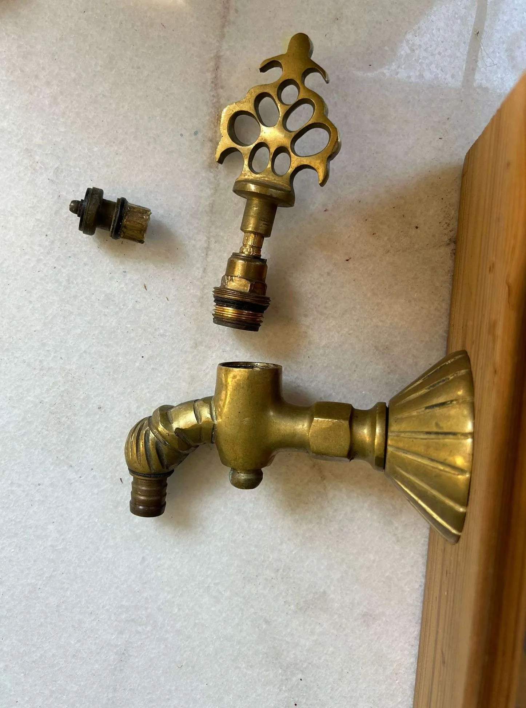The electrical cable should run out from the faucet. So, you have to insert the cable from the other side of the hole drilled into the wood plank and make the cable come out of the faucet as water comes out of it. You will have to open the upper part of the faucet to make the cable run out of it. Check the image to clarify the step.
Step 6: Here's how to insert the electrical cable
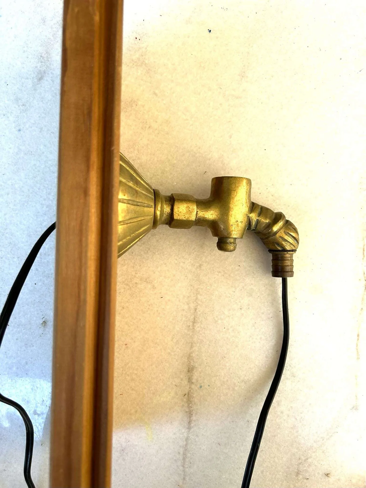Here's how your DIY industrial lamp will look once you have made the cable pass through it.
Step 7: Fit the bulb holder in the DIY faucet lamp
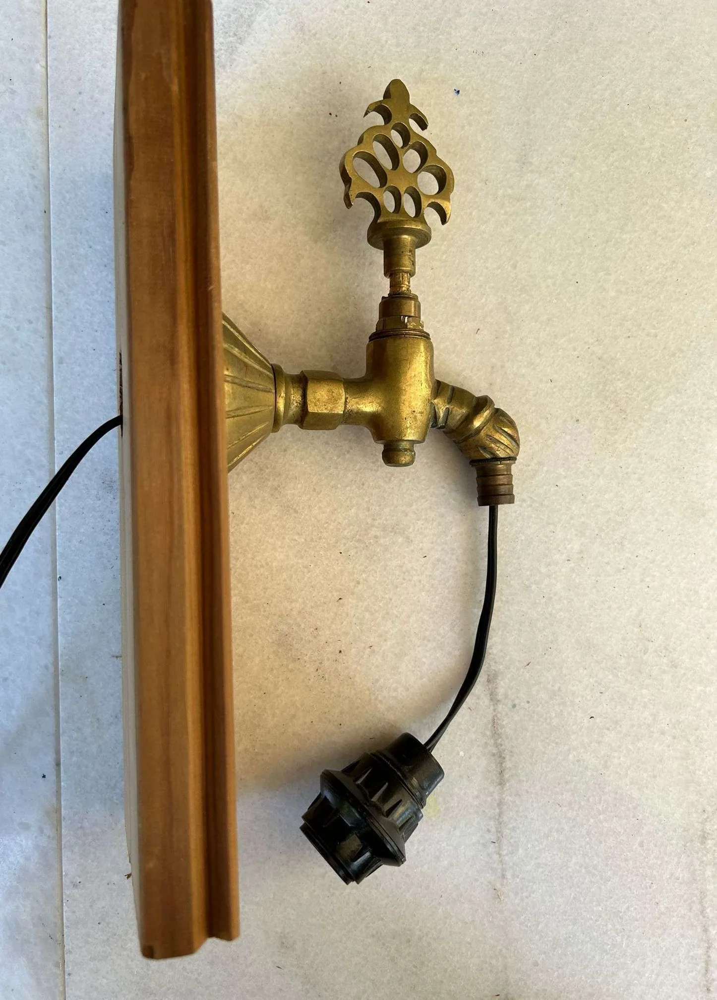Fit a bulb holder to fix the bulb on the faucet end of the DIY faucet lamp.
Step 8: Connect the cable and fix the wood plank
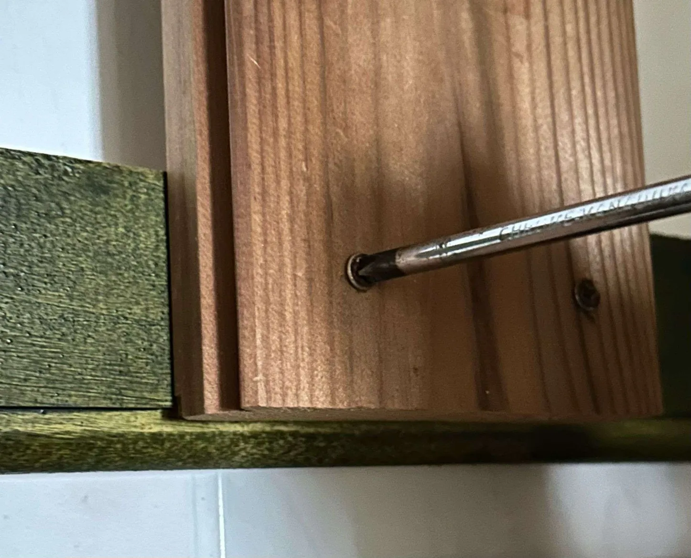Connect the electrical cable to the wall socket. Remember to keep the "switch off" when connecting the DIY faucet lamp's electrical cable with the wall socket's electrical wiring. Now, fix the wood plank to the wall. Use the drill to drill holes in the four corners of the wood plank for the screws. Tighten the screws with a screwdriver.
Step 9: Fit the electrical bulb
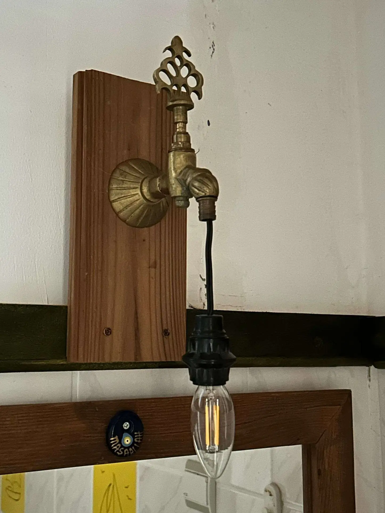Fit a bulb to the holder hanging on the cable of the DIY industrial lamp.
Step 10: Switch it on
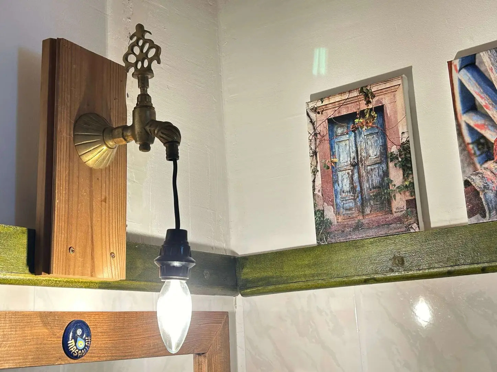Switch on the light.
Step 11: Here’s your DIY faucet lamp
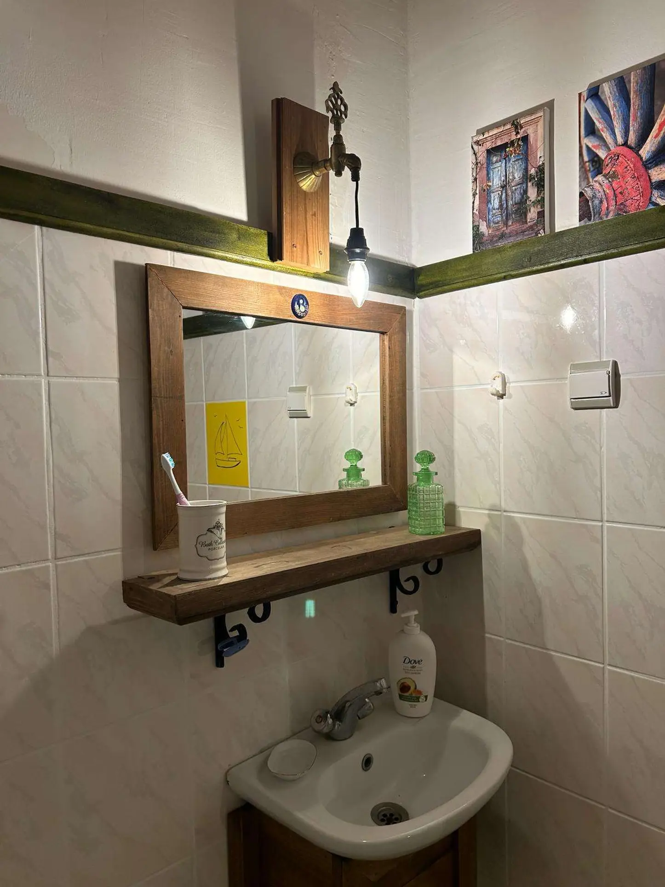Here’s your DIY faucet lamp glowing to light up the area and enhance the elegance of the décor at the same time.
Bonus Tip: More Lamp Ideas DIY
Driftwood lamp: Found driftwood during a jungle trip? Convert it into a beautiful stump lamp for your home décor.
DIY lamp from old table fan: Convert that old table fan into a stunning vintage or industrial-style table lamp.
Mason jar lamp: It’s a tried and tested DIY lamp project to bring farmhouse charm to your modern home décor.
Wine bottle chandelier: Think before throwing out the wine bottles. You can make creative chandeliers for your patio or terrace with them.
Upcycled book lamp: Upcycle or recycle the old books and make a lamp for your study table.